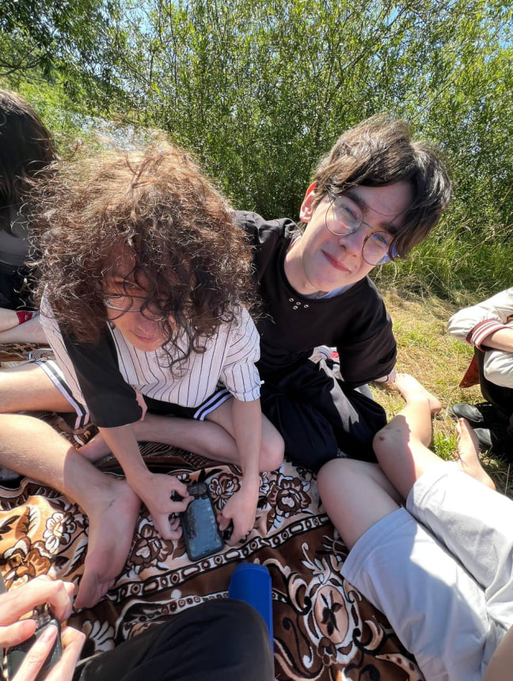

Назар Шурко
Моє фото

Про мене
Я студент і вивчаю програмування та створення веб-сайтів.
Моє місто
Я живу в селі Зашків.
Моє життєве кредо
"heroes don't exist."
Моя адреса на карті
"
width="350"
height="250"
style="border:0;"
allowfullscreen=""
loading="lazy">